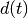
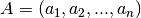
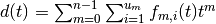
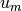
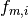
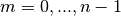
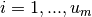
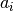
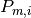
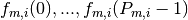

This is a sagemath implementation of an algorithm to construct the restricted partition function for a given list of positive numbers (also known als Sylvester’s denumerant). A prerequisite for using this code is a properly working installation of sage.
The code allows to explore the periodic structure of the partition function as described in the paper “Properties of the Restricted Partition Function” and implements the algorithm outlined therein. It comes in two versions - a simple one which is intended mainly for illustration of the algorithm outlined in the paper and an optimized version that can be used for restriction lists with more and / or greater numbers. The description of the optimized version also contains various usage examples.
Note
We want to draw your attention especially to the last example contained in the description of the RestrictedPartitionFunction class, where one can get an impression about the performance of the algorithm and the space needed for the representation of the restricted partition function. The tests have been done on a 64-bit Ubuntu laptop with 4 GB of RAM and four Intel(R) Core(TM) i5-2410M processors with a locally installed copy of sage version 6.2.
A RestrictedPartitionFunction allows to get the number of partitions with parts in a given list of positive integers for arbitrary nonnegative integers very efficiently.
Once constructed with RestrictedPartitionFunction(parts_in=A) for a specific restriction list A, a RestrictedPartitionFunction object can be used to calculate the number of partitions for an integer t using the object’s method number_of_partitions(t). Note that this gives the same result as Partitions(t, parts_in=A).cardinality(), but the once constructed object can be reused for different values of t and the values of t can be considerably larger.
Constructing a RestrictedPartitionFunction object for a specific restriction list A can take a long time depending on the numbers in A. The needed time in seconds is printed when the calculation is finished, but this can be suppressed by setting the class variable RestrictedPartitionFunction.print_time=False. The construction of the object is an iterative process with a number of levels equal to the size of the restriction list. To watch the progress of construction, one can set the class variable RestrictedPartitionFunction.print_info=True. Before starting the iterative process, the numbers of the restriction list are first rearranged with the purpose to get a shorter construction time. For testing purposes, it is possible to suppress this rearrangement by setting the class variable RestrictedPartitionFunction.preserve_order=True.
The representation of a RestrictedPartitionFunction is based on the fact that the restricted partition function  for  can be written as  with appropriate natural numbers  and periodical functions , where  and . The periods of the functions are correlated with common factors of the numbers . We represent a periodical function by an object of type PeriodObject containing its period  and a list of function values . Remark that such a representation of a RestrictedPartitionFunction is not unique.
To explore the content of a RestrictedPartitionFunction object d, one can use the object method get_content_str(). With the argument output_format it is possible to select the extent and presentation of the returned content. As an example, with output_format=summary one gets the number of period objects and the respective periods for each power. The full content is returned if output_format=full is given. Be aware that the amount of information can be very large in this case. Another string representation of the full content which may be better suited for a subsequent evaluation can be obtained with output_format=list. The full content in full or list format can also be written to a file with the object method to_file. In contrast to the builtin save, the content is saved in printable form, so it can be easily explored with a suitable text editor. With the class method from_file, an object with the same content can be reconstructed from a file written with to_file.
If a RestrictedPartitionFunction object for a given restriction list has been already constructed, one can obtain a new RestrictedPartitionFunction for a restriction list with an additional positive integer a with the class method build_next().
EXAMPLES:
Construct some partition functions for specific restriction lists and use them to get the number of partitions for several numbers:
sage: RestrictedPartitionFunction.print_time=False # suppress timing for doctest
sage: d=RestrictedPartitionFunction([1,2,3])
sage: d.number_of_partitions(3)
3
sage: d.number_of_partitions(10000)
8338334
sage: d.number_of_partitions(10**20)
833333333333333333383333333333333333334
sage: d.number_of_partitions(10**10**6).ndigits()
1999999
sage: A=[5,10,10,2,8,20,15,2,9,9,7,4,12,13,19]
sage: d=RestrictedPartitionFunction(parts_in=A)
sage: d.number_of_partitions(9)
8
sage: d.number_of_partitions(10000)
39327093201690271931461735037880
Comparing RestrictedPartitionFunction().number_of_partitions() with Partitions().cardinality(). The result must be the same:
sage: RestrictedPartitionFunction.print_time=False # suppress timing for doctest
sage: A=[10,12,13]
sage: d=RestrictedPartitionFunction(parts_in=A)
sage: t=500
sage: d.number_of_partitions(t) == Partitions(t, parts_in=A).cardinality()
True
sage: len([t for t in [100..200] if d.number_of_partitions(t) != Partitions(t, parts_in=A).cardinality()])
0
Showing full content of period objects contained in the representation of an object of type RestrictedPartitionFunction:
sage: A = [10, 5, 6]
sage: d = RestrictedPartitionFunction(A)
sage: print d.get_content_str(output_format='full')
RestrictedPartitionFunction for [5, 6, 10], consisting of 3 lists with a total of 5 period objects:
power=0, 2 period object(s):
P=10, values=[2/3, 57/200, -7/75, -7/200, -28/75, 5/8, 17/75, 13/200, -22/75, -3/200]
P=6, values=[1/3, -1/3, 0, 0, 1/3, 0]
power=1, 2 period object(s):
P=5, values=[29/300, 23/300, 17/300, 11/300, 1/60]
P=2, values=[-1/75, -3/100]
power=2, 1 period object(s):
P=1, values=[1/600]
Showing summary of period objects contained in the RestrictedPartitionFunction object constructed above:
sage: print d.get_content_str(output_format='summary')
RestrictedPartitionFunction for [5, 6, 10], consisting of 3 lists with a total of 5 period objects:
power=0, 2 PO(s) with period: 10,6
power=1, 2 PO(s) with period: 5,2
power=2, 1 PO(s) with period: 1
Showing summary of period objects contained in the representation of an object of type RestrictedPartitionFunction may be suited especially to get a quick overview if the full representation of the period objects is too large for a screen output:
sage: A=[5, 10, 10, 2, 8, 20, 15, 2, 9, 9, 7, 4, 12, 13, 19]
sage: d=RestrictedPartitionFunction(parts_in=A)
sage: print d.get_content_str(output_format='summary')
RestrictedPartitionFunction for [2, 5, 7, 9, 13, 19, 4, 2, 12, 8, 15, 10, 9, 20, 10], consisting of 15 lists with a total of 29 period objects:
power=0, 8 PO(s) with period: 12,15,7,9,13,19,8,20
power=1, 3 PO(s) with period: 10,4,9
power=2, 3 PO(s) with period: 10,4,3
power=3, 3 PO(s) with period: 4,5,3
power=4, 2 PO(s) with period: 5,2
power=5, 1 PO(s) with period: 2
power=6, 1 PO(s) with period: 2
power=7, 1 PO(s) with period: 2
power=8, 1 PO(s) with period: 1
power=9, 1 PO(s) with period: 1
power=10, 1 PO(s) with period: 1
power=11, 1 PO(s) with period: 1
power=12, 1 PO(s) with period: 1
power=13, 1 PO(s) with period: 1
power=14, 1 PO(s) with period: 1
Writing the full content in string form to a file where it can be viewed with a suitable text editor:
sage: d.to_file(filename='fullout1.txt', output_format='full')
Construct partition functions for some well-known restriction lists, showing the needed time in seconds to get an impression about the performance of the algorithm. Additionally, save the full content of each partition function to a file and show the file size in bytes to get an impression about the space needed for the representation of the restricted partition function (Note: the comments random and/or long time are for automatic doctesting as the times are not exactly reproducible and some of them exceed one second):
sage: RestrictedPartitionFunction.print_time=True # we want to see the timing
sage: pathname = os.path.join(SAGE_TMP, 'fullout')
sage: A=[1, 2, 3, 4, 5, 6]
sage: d=RestrictedPartitionFunction(parts_in=A) # random time
time: 0.016
sage: d.to_file(pathname, 'full')
sage: print os.path.getsize(pathname)
598
sage: A=[12223, 12224, 36674, 61119, 85569]
sage: d=RestrictedPartitionFunction(parts_in=A) # random long time
time: 14.232
sage: d.to_file(pathname, 'full') # depends on long time line
sage: print os.path.getsize(pathname) # depends on long time line
7952568
sage: A=[12137, 24269, 36405, 36407, 48545, 60683]
sage: d=RestrictedPartitionFunction(parts_in=A) # random long time
time: 17.108
sage: d.to_file(pathname, 'full') # depends on long time line
sage: print os.path.getsize(pathname) # depends on long time line
7357507
sage: A=[20601,40429,40429,45415,53725,61919,64470,69340,78539,95043]
sage: d=RestrictedPartitionFunction(parts_in=A) # random long time
time: 93.444
sage: d.to_file(pathname, 'full') # depends on long time line
sage: print os.path.getsize(pathname) # depends on long time line
42745525
sage: A=[5,10,10,2,8,20,15,2,9,9,7,4,12,13,19]
sage: d=RestrictedPartitionFunction(parts_in=A) # random time
time: 0.144
sage: d.to_file(pathname, 'full')
sage: print os.path.getsize(pathname)
6295
sage: A = [i for i in range(1,61)]
sage: d=RestrictedPartitionFunction(parts_in=A) # random long time
time: 16.564
sage: d.to_file(pathname, 'full') # depends on long time line
sage: print os.path.getsize(pathname) # depends on long time line
379127
sage: A = [i for i in range(1,101)]
sage: d=RestrictedPartitionFunction(parts_in=A) # random long time
time: 130.536
sage: d.to_file(pathname, 'full') # depends on long time line
sage: print os.path.getsize(pathname) # depends on long time line
2146284
Get the number of partitions of a nonnegative integer t with parts in a specific restriction list as contained in the current object of type RestrictedPartitionFunction.
Note that this gives the same result as Partitions(t, parts_in=A).cardinality(), but the once constructed object of type RestrictedPartitionFunction can be used to call number_of_partitions consecutively for different values of t and the values of t can be considerably larger.
INPUT:
OUTPUT:
EXAMPLES:
Construct a partition function for a specific restriction list and use it to get the number of partitions for several numbers:
sage: RestrictedPartitionFunction.print_time=False # suppress timing for doctest
sage: A=[5,10,10,2,8,20,15,2,9,9,7,4,12,13,19]
sage: d=RestrictedPartitionFunction(parts_in=A)
sage: d.number_of_partitions(9)
8
sage: d.number_of_partitions(100000)
3591162466582613140951155095382336216938321372
sage: d.number_of_partitions(10**6)
355852439929171688810360576684162614436054571631359229484001
sage: d.number_of_partitions(10**7)
35552753497121464994061233188681496764739760087879328128319410451219615958
For increasing powers of 10**10, get the number of partitions for the same same restriction list and show the number of digits of the resulting numbers:
sage: print [d.number_of_partitions(10**10**i).ndigits() for i in range(1,8)] # long time (1 min)
[116, 1376, 13976, 139976, 1399976, 13999976, 139999976]
Return a string representation of the content of an object of type RestrictedPartitionFunction where the amount and representation of the information is selected by the argument output_format.
INPUT:
OUTPUT:
EXAMPLES:
Let us have a look at the various representations for a very small RestrictedParttionFunction object:
sage: RestrictedPartitionFunction.print_time=False # suppress timing for doctest
sage: d=RestrictedPartitionFunction(parts_in=[1,2,3])
The usual string representation does not reveal the content:
sage: print d
RestrictedPartitionFunction for [1, 2, 3], consisting of 3 lists with a total of 4 period objects
With get_content_str(output_format='summary') or, equivalently, get_content_str() one gets the number of period objects and their periods for each power:
sage: print d.get_content_str()
RestrictedPartitionFunction for [1, 2, 3], consisting of 3 lists with a total of 4 period objects:
power=0, 2 PO(s) with period: 2,3
power=1, 1 PO(s) with period: 1
power=2, 1 PO(s) with period: 1
With get_content_str(output_format='full'), the values stored in the period objects are shown additionally:
sage: print d.get_content_str('full')
RestrictedPartitionFunction for [1, 2, 3], consisting of 3 lists with a total of 4 period objects:
power=0, 2 period object(s):
P=2, values=[1/4, 0]
P=3, values=[3/4, 5/12, 5/12]
power=1, 1 period object(s):
P=1, values=[1/2]
power=2, 1 period object(s):
P=1, values=[1/12]
With output_format='list' the full information is formatted in list form, which may be better suited for a subsequent evaluation:
sage: print d.get_content_str('list')
[[1, 2, 3], [[[1/4, 0], [3/4, 5/12, 5/12]], [[1/2]], [[1/12]]]]
We now create a RestrictedPartitionFunction for a larger restriction list and show the summary of its content:
sage: A=[5, 10, 10, 2, 8, 20, 15, 2, 9, 9, 7, 4, 12, 13, 19]
sage: d=RestrictedPartitionFunction(parts_in=A)
sage: print d.get_content_str('summary')
RestrictedPartitionFunction for [2, 5, 7, 9, 13, 19, 4, 2, 12, 8, 15, 10, 9, 20, 10], consisting of 15 lists with a total of 29 period objects:
power=0, 8 PO(s) with period: 12,15,7,9,13,19,8,20
power=1, 3 PO(s) with period: 10,4,9
power=2, 3 PO(s) with period: 10,4,3
power=3, 3 PO(s) with period: 4,5,3
power=4, 2 PO(s) with period: 5,2
power=5, 1 PO(s) with period: 2
power=6, 1 PO(s) with period: 2
power=7, 1 PO(s) with period: 2
power=8, 1 PO(s) with period: 1
power=9, 1 PO(s) with period: 1
power=10, 1 PO(s) with period: 1
power=11, 1 PO(s) with period: 1
power=12, 1 PO(s) with period: 1
power=13, 1 PO(s) with period: 1
power=14, 1 PO(s) with period: 1
Then we use the string created with output_format='list' to analyze the content of the partition function. First, we want to see the for example the second period object from power 4. The next example extracts the greatest value from the period objects of each power and shows them:
sage: d_list_str = d.get_content_str(output_format='list')
sage: d_list = sage_eval(d_list_str)
sage: d_list[1][4][1]
[145092185570084783/624488216002560000000,
138207696216866033/624488216002560000000]
sage: [(i, max([v for p in pl for v in p])) for i, pl in enumerate(d_list[1])]
[(0, 3076481423136499854771839/506341290417035673600000),
(1, 683728757821142046661/3091216669212672000000),
(2, 33978463148176350767/1545608334606336000000),
(3, 1591376310823161673/429335648501760000000),
(4, 145092185570084783/624488216002560000000),
(5, 10889579327/1069915392000000),
(6, 4339575160381/14636442562560000000),
(7, 761837855243/122946117525504000000),
(8, 32978781481/351274621501440000000),
(9, 1673677/1621267483852800000),
(10, 11454959/1405098486005760000000),
(11, 278429/6182433338425344000000),
(12, 15313/92736500076380160000000),
(13, 29/80371633399529472000000),
(14, 1/2813007168983531520000000)]
Write the string representation of the full content of an object of type RestrictedPartitionFunction to a file.
INPUT:
OUTPUT:
A string representation of the full content of the object is written to the specified file in the requested output_format
EXAMPLES:
Create a restricted partition function object and save its full content to a file:
sage: d=RestrictedPartitionFunction(parts_in=[6,10,31])
sage: d
RestrictedPartitionFunction for [6, 31, 10], consisting of 3 lists with a total of 5 period objects
sage: pathname = os.path.join(SAGE_TMP, 'outfile1')
sage: d.to_file(pathname)
Create a new object of type RestrictedPartitionFunction from a file that has been created before by means of the object method to_file.
INPUT:
OUTPUT:
EXAMPLES:
Suppose the example from the description of to_file has been run in a previous session. We simulate this by assigning another value to d. Then we reconstruct d from the file:
sage: d=1
sage: d
1
sage: pathname = os.path.join(SAGE_TMP, 'outfile1')
sage: d=RestrictedPartitionFunction.from_file(pathname)
sage: d
RestrictedPartitionFunction for [6, 31, 10], consisting of 3 lists with a total of 5 period objects
Build a new object of type RestrictedPartitionFunction from an existing one, with an additional positive integer a in the restriction list.
Using build_next, one can take advantage of an already constructed RestrictedPartitionFunction object that took a long time to construct if additions to the restriction list are needed later. However, remark that if the complete restriction list is known from the beginning, a considerably shorter overall construction time can be often achieved as compared to successive calls to build_next, because the numbers from parts_in are first put into an order that is presumably better suited for the calculations.
Also remark that the content of a RestrictedPartitionFunction object constructed by successive calls to build_next will not necessarily be the same as when the list is given at the beginning, but it will always lead to the same results when used to get the number_of_partitions for the same number t.
INPUT:
OUTPUT:
EXAMPLES:
Construct partition function d1 for a restriction list. Starting from d1, construct d2 with an additional number in the restriction list. Show summary of both restricted partition functions and use them to get number of partitions:
sage: RestrictedPartitionFunction.print_time=False # suppress timing for doctest
sage: d1=RestrictedPartitionFunction(parts_in=[5, 6, 10])
sage: d2=RestrictedPartitionFunction.build_next(a=2, dl=d1)
sage: print d1.get_content_str('summary')
RestrictedPartitionFunction for [5, 6, 10], consisting of 3 lists with a total of 5 period objects:
power=0, 2 PO(s) with period: 10,6
power=1, 2 PO(s) with period: 5,2
power=2, 1 PO(s) with period: 1
sage: print d2.get_content_str('summary')
RestrictedPartitionFunction for [5, 6, 10, 2], consisting of 4 lists with a total of 6 period objects:
power=0, 2 PO(s) with period: 10,6
power=1, 2 PO(s) with period: 2,5
power=2, 1 PO(s) with period: 2
power=3, 1 PO(s) with period: 1
sage: d1.number_of_partitions(11)
1
sage: d2.number_of_partitions(11)
2
Now construct d3 for the same restriction list as the resulting list for d2. Verify that d2 and d3 give the same number_of_partitions for several input numbers. Note that the content of d2 and d3 is not the same:
sage: d3=RestrictedPartitionFunction(parts_in=[5, 6, 10, 2])
sage: len([t for t in [100..200] if d2.number_of_partitions(t) != d3.number_of_partitions(t)])
0
sage: print d3.get_content_str('summary')
RestrictedPartitionFunction for [2, 5, 6, 10], consisting of 4 lists with a total of 6 period objects:
power=0, 2 PO(s) with period: 6,10
power=1, 2 PO(s) with period: 2,5
power=2, 1 PO(s) with period: 2
power=3, 1 PO(s) with period: 1
sage: print d2[1]
2 period object(s):
P=2, values=[71/600, 9/400]
P=5, values=[29/600, 17/600, 29/600, 1/120, 1/120]
sage: print d3[1]
2 period object(s):
P=2, values=[19/150, 37/1200]
P=5, values=[1/25, 1/50, 1/25, 0, 0]
A RestrictedPartitionFunction allows to get the number of partitions with parts in a given list of positive integers for arbitrary nonnegative integers very efficiently.
This class implements the simple version of the algorithm and is not optimized. Its only purpose is to illustrate the idea of the algorithm. An optimized version is also available.
Once constructed with RestrictedPartitionFunction(parts_in=A) for a specific restriction list A, a RestrictedPartitionFunction object can be used to calculate the number of partitions for an integer t using the object’s method .number_of_partitions(t). Note that this gives the same result as Partitions(t, parts_in=A).cardinality(), but the once constructed object can be reused for different values of t and the values of t can be considerably larger.
The representation of a RestrictedPartitionFunction is based on the fact that the restricted partition function for can be written as with appropriate natural numbers and periodical functions , where and . The periods of the functions are correlated with common factors of the numbers . We represent a periodical function by an object of type PeriodObject containing its period and a list of function values . Remark that such a representation of a RestrictedPartitionFunction is not unique.
To explore the content of a RestrictedPartitionFunction object d, one can use the object method get_content_str(). With the argument output_format it is possible to select the extent and presentation of the returned content. As an example, with output_format=summary one gets the number of period objects and the respective periods for each power. The full content is returned if output_format=full is given. Be aware that the amount of information can be very large in this case. Another string representation of the full content which may be better suited for a subsequent evaluation can be obtained with output_format=list.
If a RestrictedPartitionFunction object for a given restriction list has been already constructed, one can obtain a new RestrictedPartitionFunction for a restriction list with an additional positive integer a with the class method build_next().
EXAMPLES:
Construct some partition functions for specific restriction lists and use them to get the number of partitions for several numbers:
sage: d=RestrictedPartitionFunction([1,2,3])
sage: d.number_of_partitions(3)
3
sage: d.number_of_partitions(10000)
8338334
sage: d.number_of_partitions(10**20)
833333333333333333383333333333333333334
sage: d.number_of_partitions(10**10**6).ndigits()
1999999
Comparing RestrictedPartitionFunction().number_of_partitions() with Partitions().cardinality(). The result must be the same:
sage: A=[10,12,13]
sage: d=RestrictedPartitionFunction(parts_in=A)
sage: t=500
sage: d.number_of_partitions(t) == Partitions(t, parts_in=A).cardinality()
True
sage: len([t for t in [100..200] if d.number_of_partitions(t) != Partitions(t, parts_in=A).cardinality()])
0
Showing the content of a RestrictedPartitionFunction:
sage: d = RestrictedPartitionFunction(parts_in=[10, 5, 6])
sage: print d.get_content_str(output_format='full')
RestrictedPartitionFunction for [10, 5, 6], consisting of 3 lists with a total of 5 period objects:
power=0, 2 period object(s):
P=10, values=[0, -17/50, -19/25, -33/50, -26/25, 0, -11/25, -14/25, -24/25, -16/25]
P=6, values=[1, 7/24, 2/3, 5/8, 1, 5/8]
power=1, 2 period object(s):
P=2, values=[1/30, 1/60]
P=5, values=[1/20, 3/100, 1/100, -1/100, -3/100]
power=2, 1 period object(s):
P=1, values=[1/600]
Showing summary of period objects contained in the representation of an object of type RestrictedPartitionFunction:
sage: A = [i for i in range(1,12)]
sage: d=RestrictedPartitionFunction(parts_in=A)
sage: print d.get_content_str(output_format='summary')
RestrictedPartitionFunction for [1, 2, 3, 4, 5, 6, 7, 8, 9, 10, 11], consisting of 11 lists with a total of 19 period objects:
power=0, 6 PO(s) with period: 8,11,10,9,7,6
power=1, 3 PO(s) with period: 4,5,3
power=2, 2 PO(s) with period: 2,3
power=3, 1 PO(s) with period: 2
power=4, 1 PO(s) with period: 2
power=5, 1 PO(s) with period: 1
power=6, 1 PO(s) with period: 1
power=7, 1 PO(s) with period: 1
power=8, 1 PO(s) with period: 1
power=9, 1 PO(s) with period: 1
power=10, 1 PO(s) with period: 1
Note
Remark that these methods are similar to the methods of the RestrictedPartitionFunction class from the resparfunc module, but there are fewer methods available.
Get the number of partitions of a nonnegative integer t with parts in a specific restriction list as contained in the current object of type RestrictedPartitionFunction.
INPUT:
OUTPUT:
Return a string representation of the content of an object of type RestrictedPartitionFunction where the amount and representation of the information is selected by the argument output_format.
INPUT:
OUTPUT:
Build a new object of type RestrictedPartitionFunction from an existing one, with an additional positive integer a in the restriction list.
Using build_next, one can take advantage of an already constructed RestrictedPartitionFunction object that took a long time to construct if additions to the restriction list are needed later.
INPUT:
OUTPUT: